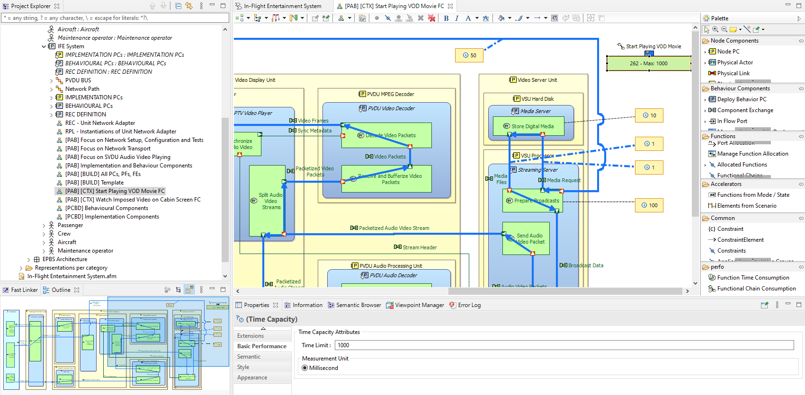

Purpose
The Performance viewpoint enables to simply describe the non-functional aspect of performance in Capella.
Scope
Performance information can be added on a Logical/PhysicalFunction, Logical/PhysicalFunctionExchange, and Logical/PhysicalFunctionalChain elements or graphically in LAB/PAB diagrams.
Principles
On a Functional Exchange or Function, an "Execution Time" indicator defines the execution time. A "Time Limit" defines the maximal execution accepted by a Functional Chain.
The Total Execution Time of a Functional Chain is the sum of the Execution Time of all the Functional Exchange and Function elements which compose the Functional Chain.
Graphically, when:
- Total Execution Time < Execution Limit: the Execution Limit is displayed in
green.
- Total Execution Time = Execution Limit: the Execution Limit is displayed in
orange.
- Total Execution Time > Execution Limit: the Execution Limit is displayed in
red.

Practice
The Basic Performance viewpoint enriches the Capella palette with a new section composed of two icons:
-
Function Time Consumption: it enables to state a level of time consumption of a Function or Functional Exchange.
-
Functional Chain Consumption it enables to state the maximum level of time consumption accepted by a Functional Chain.
Use of Function Time Consumption:
- Click on the icon and next on a Function or Functional Exchange.
- Set the execution time accessible in the 'Basic Performance' section of the Properties view.
- The Functional Chain Consumption is automatically recomputed and the color changes if needed.
Use of Functional Chain Consumption:
- Click on the icon and next on a functional chain.
- Set the Execution Time Limit accessible in the 'Basic Performance' section of the Properties view.
- The Functional Chain Consumption is automatically recomputed and the color changes if needed.